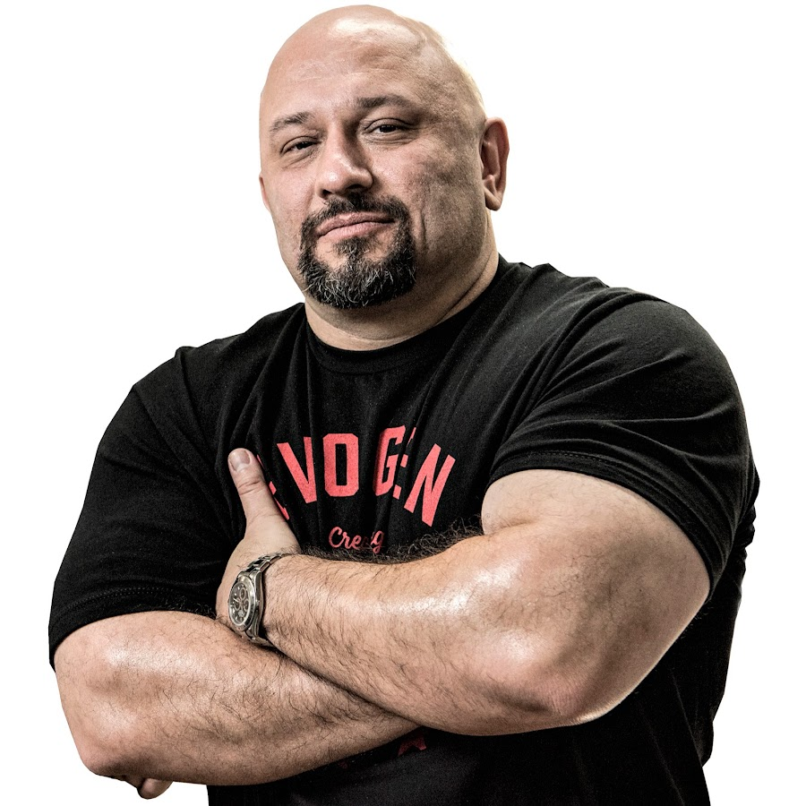
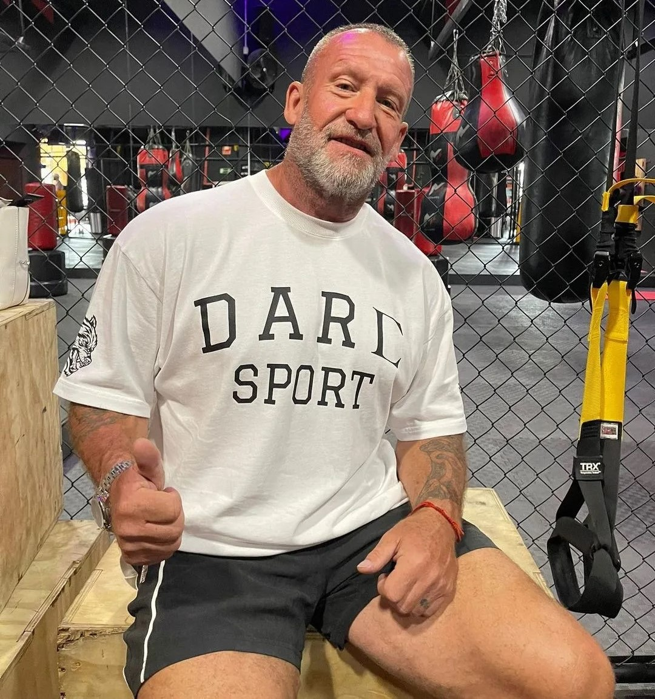
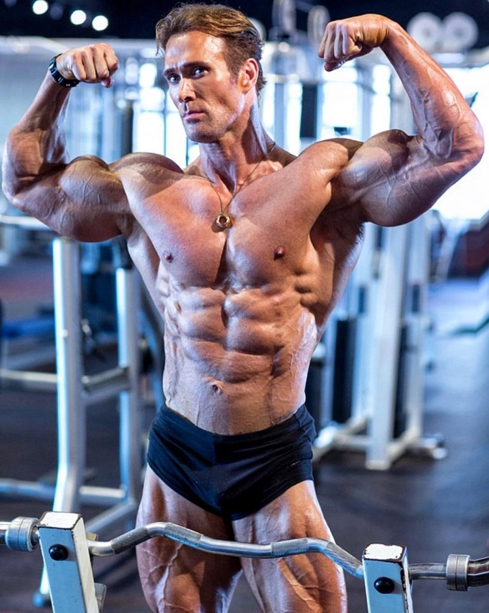
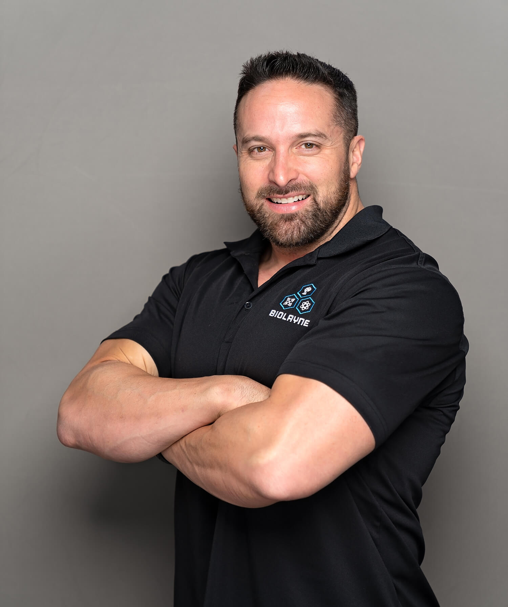

Hany Rambod
Nicknamed “The Pro Creator,” Hany Rambod has been constructing championship-winning physiques for over 20 years. His ground-breaking FST-7 system has helped his clients win a total of 24 Olympia titles. Rambod’s roster of champions includes winners in categories including Mr. Olympia, Ms. Figure Olympia, 202 Olympia, 212 Olympia, Classic Physique, and Physique Olympia. When Rambod is not busy coaching many of the world’s elite, he serves as the CEO of Evogen Nutrition, one of the most respected brands in sports nutrition.
Dorian Yates
Dorian Yates, a six-time Mr. Olympia champion, is considered by many to be one of the greatest bodybuilders in the history of the sport. He earned six consecutive Olympia victories during his impressive tenure (1992-1997). “The Shadow” was revered for his intense training behind-the-scenes and always allowed his physique to do the talking on stage.
Mike O'Hearn
O'Hearn is a bodybuilder and fitness model. He is a seven-time Fitness Model of the Year winner and participated on the popular show "American Gladiators" from 1989 to 1996. O'Hearn is also a four-time Mr. Natural Universe winner for his bodybuilding work. He has around 40 years of experience in bodybuilding.
Layne Norton
Layne Norton is the founder of BioLayne. He created the company to provide ethical, science-based coaching that synthesized real world experience with evidence based protocols. In his coaching career he has turned over 70 people pro and reshaped the way that countless people think about nutrition. To that end, Layne completed a BS in Biochemistry and a PhD in Nutritional Sciences, honing his intellectual skills under Dr. Donald Layman, one of the foremost researchers on protein metabolism and fat loss in the world.